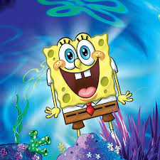

sinopse - Dragon Ball conta a história de Son Goku, uma criança que aparentemente veio do espaço e é encontrada por um senhor de idade, Son Gohan, que o adota e o cria como neto. Com o tempo, o jovem cresce e se torna um exímio lutador de artes marciais, com força e habilidades sobre-humanas.
sinopse - Pokémon é uma franquia de mídia que pertence a The Pokémon Company, tendo sido criada por Satoshi Tajiri em 1995. Ela é centrada em criaturas ficcionais chamadas "Pokémon", que os seres humanos capturam e os treinam para lutarem entre si com seus ataques de diversos tipos

sinopse - A franquia, que tem como seus produtos, filmes, histórias em quadrinhos, jogos eletrônicos e brinquedos pertencentes a Hasbro, começou em Mighty Morphin Power Rangers (1993–96), atualmente se encontrando na vigésima oitava temporada, Power Rangers Dino Fury (2021–22)
sinopse -criada pelo biólogo marinho e animador Stephen Hillenburg, sendo produzida e exibida pelo canal Nickelodeon. A série narra as aventuras e os empreendimentos do personagem-título e de seus diversos amigos na fictícia cidade subaquática de Bikini Bottom (Fenda do Biquíni). A popularidade da série a tornou uma franquia de mídia, bem como a animação/série de maior audiência Nickelodeon e a propriedade mais distribuída internacionalmente pela Paramount Media Networks. A franquia de mídia da série gerou um lucro de US$ 13 bilhões em receita de merchandising para a Nickelodeon em 2019.[1] A série é livre para todos os públicos.
sinopse -Um grupo de crianças vai a um parque de diversões e lá se deparam com o brinquedo Caverna do Dragão. Ao entrarem nele, são enviados a um mundo mágico, aonde vivem muitas aventuras e contam com a ajuda de Mestre dos Magos para tentar voltar para casa.
sinopse -criada pelo biólogo marinho e animador Stephen Hillenburg, sendo produzida e exibida pelo canal Nickelodeon. A série narra as aventuras e os empreendimentos do personagem-título e de seus diversos amigos na fictícia cidade subaquática de Bikini Bottom (Fenda do Biquíni). A popularidade da série a tornou uma franquia de mídia, bem como a animação/série de maior audiência Nickelodeon e a propriedade mais distribuída internacionalmente pela Paramount Media Networks. A franquia de mídia da série gerou um lucro de US$ 13 bilhões em receita de merchandising para a Nickelodeon em 2019.[1] A série é livre para todos os públicos.
sinopse O Pica-Pau foi criado em 1940 por Walter Lantz e o desenhista de storyboard Ben Hardaway aparecendo pela primeira vez em "Knock Knock". Em seus primeiros desenhos animados, o Pica-Pau aparece como um pássaro louco, com uma aparência considerada grotesca, que surgiu na esteira do sucesso de Pernalonga e Patolino da Warner Bros. Porém, ao longo dos anos, ele sofreu diversas mudanças no seu visual, ganhando traços mais simpáticos, uma aparência mais refinada e um temperamento mais tranquilo. Nos Estados Unidos, o Pica-Pau teve inicialmente a voz original por Mel Blanc, que também fez as vozes de quase todos os personagens do sexo masculino das séries Looney Tunes e Merrie Melodies. Como voz original do Pica-Pau, Blanc foi sucedido por Ben Hardaway, um dos criadores do desenho, e mais tarde por Grace Stafford, esposa de Walter Lantz Cherry Davis em Who Framed Roger Rabbit? fez sua voz original. Billy West fez sua voz em The New Woody Woodpecker Show. Eric Bauza fornece sua voz maluca e agitada em Woody Woodpecker (filme) e Woody Woodpecker (2018).
sinopse -criada pelo biólogo marinho e animador Stephen Hillenburg, sendo produzida e exibida pelo canal Nickelodeon. A série narra as aventuras e os empreendimentos do personagem-título e de seus diversos amigos na fictícia cidade subaquática de Bikini Bottom (Fenda do Biquíni). A popularidade da série a tornou uma franquia de mídia, bem como a animação/série de maior audiência Nickelodeon e a propriedade mais distribuída internacionalmente pela Paramount Media Networks. A franquia de mídia da série gerou um lucro de US$ 13 bilhões em receita de merchandising para a Nickelodeon em 2019.[1] A série é livre para todos os públicos.
sinopse Tom raramente consegue capturar Jerry, principalmente por causa das habilidades do engenhoso ratinho, e também por causa de sua própria estupidez. As perseguições eram eletrizantes e sempre vinham acompanhadas por uma boa trilha sonora. Também eram utilizadas diversas armadilhas e truques que no final não davam resultado satisfatório, como bombas e ratoeiras, coisas que eram fundamentais na rivalidade entre o gato e o rato. Alguns personagens também marcam presença na trama, como o bulldog Spike e o rival de Tom, o gato Butch..
sinopse Originalmente, Scooby-Doo foi desenhado como um Dogue Alemão, mas o cachorro falante quase foi um Cão Pastor. Na época, os produtores do desenho acharam que se Scooby-Doo fosse um Cão Pastor, ele seria muito parecido com o cachorro Red, que aparece no show “A Turma do Archie” — exibido na CBS de 1968 a 1969.
sinopse Na cidade onde mora Bob é um jovem construtor conhecido pelo seu grandioso trabalho em obras consertando, construindo e reparando inúmeras casas e lojas dos habitantes. No entanto ele não está sozinho em seu serviço, Bob está sempre na companhia de suas máquinas falantes que o ajudam no seu trabalho de construção civil ao mesmo tempo que aprendem coisas novas em meio as andanças pela cidade.

sinopse A franquia fala sobre um garoto que usa um dispositivo extraterrestre em formato de relógio de pulso, que a cada série é renovado ou trocado. É o chamado Omnitrix, que permite a ele se transformar em diversas criaturas exóticas. A franquia Ben 10 já arrecadou mais de 2 bilhões de dólares em vendas de varejo na Europa, Oriente Médio e África (EMEA) e já vendeu 1 milhão de brinquedos em todo o mundo.[2]
pagina 1